A generated application reference for Aurora Galactica: audio cues by context, visual atmosphere themes, and the developer-facing presentation controls that shape the live game presentation.
Guide focus: Keep Aurora's atmosphere, sound, and presentation coherent as one application-owned system while preserving a clean boundary with Platinum, use the Galaga cue matrix to map real reference clips against Aurora states, and distinguish clearly between Aurora's own synthetic mix, the Galaga-style synthetic approximation, and the new runtime reference-audio mode that plays actual extracted Galaga clips.
Sound buttons use a hidden same-origin preview frame running the current lane build, so the page plays Aurora, Galaga synth, and Galaga reference-runtime cues through the real in-game audio engine instead of a separate mock player. Reference buttons play extracted Galaga clips from the curated artifact library. If a button seems silent, check browser audio permission and the game's mute preference in the current lane build.
Preview frame loading. Audio buttons will use the current lane build as soon as it is ready.
Audio Event Matrix
A refreshed event-by-event timing map for Aurora against the current Galaga alignment work. Use this to review what each event is, when the sound should land, which cue or reference excerpt we use, and what should interrupt or protect it.
Game Event
Timing Of Activity
Audio Name / Status
How It Starts / Stops
Comment / Gap
Review Actions
Front-door navigation tick frontDoor
Immediate on menu move / focus change.
uiTick Implemented
Start: Initiated by shell navigation events so the shell feels responsive before gameplay starts. Stop: One-shot cue. No explicit stop rule.
Application-owned shell cue, not part of Galaga reference timing.
Front-door confirm frontDoor
Immediate on confirm / activation.
uiConfirm Implemented
Start: Initiated by shell confirm actions such as opening panels or starting a selection. Stop: One-shot cue. No explicit stop rule.
Application-owned shell cue.
Coin inserted / credit accepted frontDoor
Should occur before game start when a credit or start-ready action is accepted.
Start: Not currently modeled in Aurora. Would likely belong at the shell-to-start boundary if we add a credit/start-ready state. Stop: Would be a one-shot cue with no stop rule.
Missing event slot. Reference clip exists and is a good future fidelity target.
Wait-mode score rotation enter wait
On entering wait mode from the shell or after attract/demo reset.
attractEnter Implemented
Start: Initiated when Aurora enters the score-focused wait surface. Stop: One-shot cue. Replaced naturally by later pulses.
Aurora-owned shell/wait identity cue.
Wait-mode pulse wait
Every 2.6s while wait-mode score rotation is active.
attractPulse Implemented
Start: Initiated by the wait-mode pulse timer to keep the surface alive without entering gameplay cadence. Stop: No explicit stop; naturally suppressed when phase changes out of wait mode.
Ambient shell pulse, not intended to match Galaga gameplay timing.
Demo entry demo
At the handoff from wait/front door into autoplay demo.
attractEnter Implemented
Start: Initiated once the attract loop leaves score rotation and starts demo play. Stop: One-shot cue. Followed by demo pulse cadence.
Start: Initiated by the attract demo pulse timer. Stop: Ends when demo ends or a different phase takes over.
In Galaga reference mode this uses the convoy ambience clip rather than a shell pulse.
Game start / start preamble stage
In Galaga Reference Audio mode, gameStart now begins immediately on start input and preserves the full 4.0s reference phrase. The opening board cadence stays held until the later formation-arrival signal and first enemy entry window.
gameStart -> galaga2-game-start.m4a full phrase Implemented with measured full-phrase policy
Start: Initiated immediately after pressing Start for the measured stage-1 opening flow in Galaga reference mode. Stop: Stops attractEnter, attractPulse, and stagePulse before playing. One-shot cue.
Measured-reference policy: preserve the canonical 4.0s phrase first, then place the arrival signal and first visible enemies after it.
Formation arrival / stage-ready signal stage
In Galaga Reference Audio mode on stage 1, it lands about 4.18s after start input, after the full game-start phrase and before the first visible enemy arrivals around 5.35s.
formationArrival -> galaga3-level-underscore.m4a excerpt 0.00s-0.82s Implemented with excerpt policy
Start: Initiated by a dedicated formation-arrival timer during the stage 1 opening handoff. Stop: Stops stagePulse before playback. One-shot cue.
This is the interstitial 'they are coming' beat between the preserved opening phrase and the first visible arrivals.
Formation pulse / convoy cadence stage
Gameplay requests a pulse roughly every 0.38s, but Galaga reference mode throttles actual clip playback to about every 1.25s and suppresses it during hold windows. In the measured stage-1 opening it stays held until after the first-arrival window, around 6.15s from start input, and later stage entries now use widened reference timing windows before cadence resumes.
stagePulse -> galaga3-ambience-convoy.m4a excerpt 0.18s-1.00s Implemented with hold policy
Start: Initiated by the ongoing gameplay cadence loop once the stage is active and no transition/result hold is in force. Stop: Stopped or held during stage transitions, challenge transitions, and challenge result windows.
This still needs continued timing review against visible movement, but the opening window is now driven by measured reference timing rather than a convenience-shortened handoff.
Enemy dive / falling alien charge stage
In Galaga Reference Audio mode, the cue is intentionally delayed about 0.12s after dive start and after visible downward travel begins, instead of firing on the exact trigger frame.
attackCharge -> galaga3-attack-charger.m4a Implemented, timing under review
Start: Initiated from enemy dive start, including scripted and random dives. Stop: One-shot cue. No explicit stop rule.
Current known issue area: timing against visible dive movement still needs tuning.
Player shot stage
Immediate on player fire.
playerShot -> galaga3-boss-damage-flagship-fighter-shot.m4a Implemented, mapping likely too broad
Start: Initiated by the player firing a shot. Stop: One-shot cue. Cooldown-limited.
Fidelity gap: Galaga reference mode currently shares this clip with enemyShot and bossHit, so the event identity is too collapsed.
Enemy shot stage
When an enemy projectile is fired, not when a dive starts.
enemyShot -> galaga3-boss-damage-flagship-fighter-shot.m4a Implemented, mapping likely too broad
Start: Initiated from enemy bullet fire during formation or dive attacks. Stop: One-shot cue. Cooldown-limited.
Likely too broad: it currently reuses the same reference clip as playerShot and bossHit.
Start: Initiated on enemy damage or kill resolution. Stop: One-shot cues. Cooldown-limited.
Reference mode currently uses the same Zako clip for both hit and boom, so destruction hierarchy is still compressed.
Boss hit / boss destroyed stage
Immediate on boss damage or kill.
bossHit -> galaga3-boss-damage-flagship-fighter-shot.m4a; bossBoom -> galaga3-boss-death-sasori.m4a Implemented, visual emphasis improved and mapping still under review
Start: Initiated on boss damage and boss destruction events. Stop: One-shot cues. Cooldown-limited.
Boss death has a dedicated clip. Boss first-hit now also gets a dedicated visual flash/emphasis pass, but bossHit still shares the mixed damage/shot clip and may need a cleaner mapping.
Capture beam deploy stage
When the boss enters beam state during a capture attempt.
Start: Initiated when a capture boss reaches the beam phase and begins the beam attack. Stop: One-shot cue with cooldown. Beam state itself ends separately.
Good direct reference mapping.
Fighter captured stage
At the exact moment the player fighter is fully captured.
Start: Initiated from score-threshold logic when an extra ship is awarded. Stop: One-shot cue with cooldown.
Direct reference mapping.
Ship destroyed stage
Immediate on ship loss.
playerHit -> galaga3-death.m4a Implemented, sync under review
Start: Initiated directly from the ship-loss event before respawn or game-over flow continues. Stop: One-shot cue with cooldown.
Audio fires on the loss event, but visual/audio sync still needs review.
Normal stage-to-stage transition stage
Queued late in the inter-stage window. The runtime cue now preserves a 3.35s reference-backed phrase when the handoff budget allows, so the inter-level moment no longer collapses into a short flag blip.
stageTransition -> galaga-level-flag-v1.m4a excerpt 0.00s-3.35s Implemented with timing-budget policy
Start: Initiated during the inter-stage handoff once the board has cleared and the transition timer reaches its cue point. Stop: Stops stagePulse, challengeResults, and challengePerfect before playback.
Now cue-budgeted and backed by reference timing windows, with later-stage entry delays used to keep arrival/cadence from stepping on the handoff.
Challenge-stage entry challenge
Queued late in the normal-to-challenge window. The challenge-entry window is now 3.35s; the cue starts about 1.13s before challenge spawn, uses a 1.6s excerpt, and preserves about 0.47s of cue tail past spawn in reference mode.
challengeTransition -> galaga2-challenging-stage.m4a excerpt 0.00s-1.60s Implemented with reference timing window
Start: Initiated when the next stage is a challenge stage and the transition timer reaches the challenge cue point. Stop: Stops stagePulse, stageTransition, challengeResults, and challengePerfect before playback.
Still one of the most sensitive timing/problem areas in live play, but it is now managed by a named reference timing window instead of a single hardcoded delay.
Challenge results challenge
Queued about 0.34s after challenge clear; the post-challenge handoff is now widened so the next-stage cue lands about 4.38s after clear and the next stage spawns about 6.0s after clear in the measured perfect-clear path.
challengeResults -> galaga2-challenging-stage-results.m4a excerpt 0.00s-1.95s Implemented with widened handoff policy
Start: Initiated when a challenge stage is cleared without a perfect result. Stop: Stops stagePulse, stageTransition, and challengeTransition before playback; also holds ambient cadence.
Now separated from challengePerfect and given a wider hold window so the result phrase can finish before the next-stage handoff.
Challenge perfect result challenge
Queued about 0.34s after a perfect challenge clear; excerpt runs 2.15s with extra cadence hold before the next-stage handoff, which now uses the same widened measured window as challenge results.
challengePerfect -> galaga2-challenging-stage-perfect.m4a excerpt 0.00s-2.15s Implemented with hold policy
Start: Initiated when a challenge stage is cleared perfectly. Stop: Stops stagePulse, stageTransition, and challengeTransition before playback; also holds ambient cadence.
Direct reference mapping with runtime-safe duration.
Game over results
On terminal ship loss when the game-over state is entered.
Start: Not currently modeled as distinct Aurora cue slots; Aurora collapses these into generic attackCharge, enemyHit, enemyBoom, and bossHit cues. Stop: N/A
Likely future fidelity feature rather than a current bug, but it explains why some combat events still feel flattened compared to Galaga.
Audio Catalog
Every currently documented Aurora sound context, grouped by where it appears in the application and playable directly from this page.
Context
Cue
Phase
Theme
Listen For
Description
Preview
Front Door Navigation Tick
uiTick
frontDoor
aurora-crown
Light Aurora shell tick, not gameplay urgency.
Subtle front-door navigation tick for Aurora-owned shell identity surfaces.
Front Door Confirm
uiConfirm
frontDoor
aurora-crown
Short confirm flourish with a polished shell feel.
Confirmation cue for front-door and shell-level Aurora selections.
Wait Mode Score Rotation Enter
attractEnter
wait
aurora-crown
A small rising motif that feels like the board is waking up.
Entry sting when Aurora transitions into the score-focused wait-mode surface.
Wait Mode Score Rotation Pulse
attractPulse
wait
aurora-crown
Gentle repeating pulse that stays ambient rather than mechanical.
Recurring pulse that keeps the score rotation alive without sounding like gameplay.
Demo Demo Entry
attractEnter
demo
aurora-crown
Aurora identity at the handoff from shell to autoplay.
Bridge from the Aurora shell identity into autoplay demo mode.
Demo Demo Pulse
attractPulse
demo
classic-arcade
Classic arcade cadence once motion on the board begins.
Ongoing demo pulse that leans back toward the classic arcade cadence once play is underway.
Stage Start Stage 1 Start
gameStart
stage
classic-arcade
A crisp arcade rise that feels close to classic stage-start energy.
Opening cue for classic early-stage Aurora presentation.
Stage Start Aurora Surge Start
gameStart
stage
aurora-surge
A brighter upward flourish that feels more expansive than the classic set.
Opening cue for the later Aurora surge/borealis stage family.
Gameplay Loop Formation Pulse Classic
stagePulse
stage
classic-arcade
Clear march-like pulse that supports classic board pressure.
Formation march/pulse for classic early-stage cadence.
Gameplay Loop Formation Pulse Aurora
stagePulse
stage
aurora-surge
A more glassy pulse that still reads as rhythm, not ambience.
Formation pulse for the Aurora-themed later-stage family.
Combat Player Shot Classic
playerShot
stage
classic-arcade
Early-stage player shot reference aligned to the classic arcade mix.
Combat Player Shot Aurora
playerShot
stage
aurora-surge
Later-stage Aurora shot variant with a slightly sleeker synth edge.
Combat Enemy Shot Classic
enemyShot
stage
classic-arcade
Enemy projectile cue for classic stages.
Combat Enemy Shot Aurora
enemyShot
stage
aurora-surge
Enemy projectile cue for Aurora-leaning later stages.
Combat Enemy Hit
enemyHit
stage
aurora-surge
Standard enemy hit cue used across Aurora combat.
Combat Boss Hit
bossHit
stage
aurora-surge
Heavier impact cue for boss and stronger target hits.
Combat Enemy Boom
enemyBoom
stage
aurora-surge
Standard enemy destruction cue.
Combat Boss Boom
bossBoom
stage
aurora-surge
Larger destruction cue for boss enemies and rogue fighter losses.
Capture / Rescue Capture Beam
captureBeam
stage
aurora-surge
Beam/deploy cue for the capture sequence.
Capture / Rescue Capture Retreat
captureRetreat
stage
aurora-surge
Recovery cue when the capture sequence resolves and retreats.
Capture / Rescue Fighter Captured
captureSuccess
stage
aurora-surge
A clear loss-state handoff before the boss retreats with the captured ship.
Distinct cue for the exact moment the player's fighter is fully captured.
Capture / Rescue Captured Fighter Destroyed
capturedFighterDestroyed
stage
aurora-surge
A sharp, regrettable destruction cue distinct from ordinary enemy hits.
Cue used when the carried/captured fighter itself is destroyed for points.
Capture / Rescue Rescue Join
rescueJoin
stage
aurora-surge
Join cue for dual-fighter reunification and rescue success.
Scoring Bonus Ship Award
extendAward
stage
aurora-surge
Extra-ship award cue used when Aurora score extends trigger.
Player State Ship Loss
playerHit
stage
aurora-surge
Player ship destruction cue during live play.
Transitions Stage Transition
stageTransition
stage
aurora-surge
A short rising handoff with more melodic identity than a simple beep.
Transition cue between standard stages.
Transitions Challenge Transition
challengeTransition
challenge
aurora-surge
A distinct bonus-stage announcement with more lift and ceremony.
Transition cue into challenge/bonus stage presentation.
Challenge Results Challenge Results
challengeResults
challenge
aurora-surge
A clean wrap-up phrase that feels like challenge scoring has concluded.
Result cue for challenge-stage completion when the run was not perfect.
Challenge Results Challenge Perfect
challengePerfect
challenge
aurora-surge
A more celebratory result than the standard challenge wrap-up.
Distinct challenge-stage result cue for perfect clears.
Results Game Over
gameOver
results
aurora-surge
A readable downward ending phrase, not just an impact effect.
End-of-run cue used by Aurora results/game-over flow.
Results High Score 1st
highScoreFirst
results
aurora-surge
A stronger celebratory placement cue for first place entry.
Rank-specific scoreboard cue when a run enters first place.
Results High Score 2nd-10th
highScoreOther
results
aurora-surge
A positive but smaller placement cue for non-first leaderboard entries.
Rank-specific scoreboard cue when a run enters the board outside first place.
Combat Dive Charge / Falling Alien
attackCharge
stage
aurora-surge
The charge cue should begin with the enemy dive, not with bullet fire.
Cue used when an enemy commits to a dive or attack run toward the player.
Stage Start Formation Arrival Signal
formationArrival
stage
aurora-surge
Short interstitial signal after start music and before alien arrival begins.
Pre-entry signal used to separate the opening start phrase from the first enemy formation arrival in Galaga reference mode.
Theme Comparison
Compare the same gameplay moments side by side. Aurora uses the application-owned mix, Galaga uses the current synthetic classic-leaning runtime family for the same cue and phase, and Reference plays the actual extracted Galaga clip we currently treat as the best mapping target.
Gameplay Element
What To Compare
Review Actions
Demo Pulse
Compare autoplay cadence and whether the board feels mechanically alive enough once demo motion begins.
Mapping status: Synthetic Galaga runtime cue vs actual indexed reference clip.
Confidence: high
Ambience / Convoy
Stage Start
Compare whether stage start feels like a clear arcade start/announcement instead of a generic cue.
Mapping status: Best current stage-start mapping from the cue matrix.
Confidence: medium
Start
Formation Pulse
Compare ongoing formation cadence and whether gameplay feels like it has enough marching pressure.
Mapping status: Strongest current reference for the board cadence bed.
Confidence: high
Ambience / Convoy
Player Shot
Compare whether player fire reads as a quick arcade shot instead of a generic impact.
Mapping status: Measured subwindow promoted for shot identity; uses a distinct initial transient so player fire can be scored separately from enemy fire and boss damage.
Confidence: medium-high
Flagship/Fighter Shot
Enemy Shot
Compare whether enemy fire is distinct enough from player fire and boss damage.
Mapping status: Measured subwindow promoted for enemy projectile feedback; still from the same source clip, but scored as a distinct reference phrase from playerShot and bossHit.
Confidence: medium-high
Flagship/Fighter Shot
Enemy Hit
Compare whether an enemy impact gives immediate hit confirmation.
Mapping status: Measured subwindow promoted for impact feedback; hit and kill hierarchy remains under review but is now scored against a distinct phrase from enemyBoom.
Confidence: medium-high
Zako
Boss Hit
Compare whether boss damage reads as a distinct multi-hit event.
Mapping status: Measured subwindow promoted for boss damage feedback; reference source remains shared, but bossHit now has a dedicated scoring window.
Confidence: medium-high
Boss Damage / Flagship Fighter Shot
Enemy Boom
Compare whether normal enemy destruction is more emphatic than a simple hit.
Mapping status: Measured subwindow promoted for normal-enemy destruction feedback; enemyHit and enemyBoom now score against separate Zako phrases.
Confidence: medium-high
Zako
Boss Boom
Compare whether boss destruction feels larger and more final than normal enemy destruction.
Mapping status: Measured coverage added for boss destruction feedback.
Confidence: high
Boss Death / Sasori
Capture Beam
Compare whether the beam deploy moment reads clearly as tractor-beam danger.
Mapping status: Strong direct mapping.
Confidence: high
Tractor Beam
Capture Retreat
Compare whether the post-capture retreat phase remains audible as a distinct state.
Mapping status: Measured coverage added for the transition between beam danger and captured-fighter state.
Confidence: medium
Capturing
Fighter Captured
Compare the exact moment the fighter is fully captured, distinct from beam deploy and retreat.
Mapping status: New Aurora cue slot added from the cue matrix.
Confidence: high
Fighter Captured
Captured Fighter Destroyed
Compare the regret/penalty moment when the carried fighter is destroyed.
Mapping status: New Aurora cue slot added from the cue matrix.
Confidence: high
Captured Fighter Destroyed
Rescue Join
Compare whether the rescue/join moment feels celebratory and distinct from ordinary scoring.
Mapping status: Strong direct mapping.
Confidence: high
Fighter Rescued (Double Ship)
Ship Loss
Compare whether ship loss feels like a real Galaga death moment rather than a generic impact.
Mapping status: Strong direct mapping.
Confidence: high
Death
Challenge Transition
Compare how distinct and ceremonial the challenge-stage announcement feels.
Mapping status: Strong direct mapping.
Confidence: high
Challenging Stage
Challenge Results
Compare whether challenge wrap-up feels like a proper result phrase instead of a generic transition.
Mapping status: New Aurora cue slot added from the cue matrix.
Confidence: high
Challenging Stage Results
Challenge Perfect
Compare whether a perfect challenge result feels more celebratory than the standard results cue.
Mapping status: New Aurora cue slot added from the cue matrix.
Confidence: high
Challenging Stage Perfect
High Score 1st
Compare whether first place entry feels distinct and more important than a lower board placement.
Mapping status: New Aurora cue slot added from the cue matrix.
Confidence: high
Name Entry (1st)
High Score 2nd-10th
Compare whether non-first leaderboard entry feels positive but smaller than first place.
Mapping status: New Aurora cue slot added from the cue matrix.
Confidence: high
Name Entry (2nd-5th)
Game Over
Compare whether the ending cue feels final and emotionally complete enough.
Mapping status: Best current end-state reference; still broader than Aurora's single slot.
Confidence: medium
Last Ship Destroyed Ambience
Visual Themes
The main atmosphere families that Aurora currently uses for front-door identity, classic play, and later-stage Aurora presentation.
Classic Arcade
The closest Aurora gets to the original Galaga look: bright, readable stars on a black field with classic cadence and no aurora ribbon wash.
How the visual themes are actually applied across front door, wait mode, standard stages, and challenge stages.
Front Door Atmosphere
The front door keeps Aurora-owned identity with a fuller ribbon field and crown audio theme while still living inside the Platinum shell.
Phase:frontDoor
Theme:aurora-crown
Background Mode:aurora-borealis
Frame Accent:classic-blue
Wait Mode Surface
Score rotation/wait mode shares the Aurora front-door family so the shell remains coherent between idle states.
Phase:wait
Theme:aurora-crown
Background Mode:aurora-borealis
Frame Accent:classic-blue
Stage 1 Classic Gameplay
Stage 1 keeps the classic stars look as the gameplay baseline, with the brighter starfield tuned against Galaga references.
Phase:stage
Theme:classic-arcade
Background Mode:classic-stars
Frame Accent:classic-blue
Stage 8 Aurora Surge
Later stages shift into the stronger Aurora visual family with softer star density and ribbon emphasis.
Phase:stage
Theme:aurora-borealis
Background Mode:aurora-borealis
Frame Accent:aurora-crown
Challenge / Bonus Stage
Challenge stages keep the configured Aurora background family rather than reverting to a special hardcoded board.
Phase:challenge
Theme:aurora-borealis
Background Mode:aurora-borealis
Frame Accent:aurora-crown
Ship And Enemy Catalog
The player ship, dual-fighter state, base enemy types, and challenge-family presentations that currently make up Aurora's live board.
Ship / Type
Visual
Families / Presentation
Where It Appears
Gameplay Context
Notes
Player Fighter player
Current Aurora player sprite
Inferred Galaga player fighter model
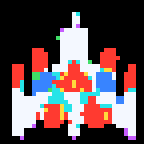
Open evidence panelClose evidence panel
Inferred Galaga player fighter model
Consensus model; 8 samples, 84% average confidence.
Consensus model; 8 samples, 84% average confidence.
Galaga player fighter target
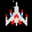
Open evidence panelClose evidence panel
Galaga player fighter target
Exact source-frame crop for player ship visual comparison.
Exact source-frame crop for player ship visual comparison.
player ship
Every standard and challenge stage as the main player ship.
Primary player-controlled ship. Can be captured, rescued, and rejoined into dual-fighter mode.
The visual baseline for reserve pips, ship loss, rescue, and extra-ship award feedback.
Dual Fighter player state
Current dual-fighter state
Inferred Galaga dual-fighter model
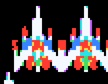
Open evidence panelClose evidence panel
Inferred Galaga dual-fighter model
Consensus model; 1 sample, 100% average confidence.
Consensus model; 1 sample, 100% average confidence.
Galaga dual-fighter target
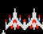
Open evidence panelClose evidence panel
Galaga dual-fighter target
Exact source-frame crop for rescue, dual-fighter, and captured-fighter comparison.
Exact source-frame crop for rescue, dual-fighter, and captured-fighter comparison.
joined player pair
After a successful rescue join during normal Aurora play.
A paired player state rather than a separate enemy or pack. Central to Aurora's rescue and trust-fix behavior.
Should be documented separately because it changes shot spread, survival logic, and recovery expectations.
Bee Line enemy
Current Aurora bee sprite
Inferred Galaga Zako scout model
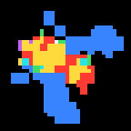
Open evidence panelClose evidence panel
Inferred Galaga Zako scout model
Consensus model; 3 samples, 92% average confidence.
Consensus model; 3 samples, 92% average confidence.
Galaga Zako scout target
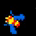
Open evidence panelClose evidence panel
Galaga Zako scout target
Exact source-frame crop from a live Zako/scout dive pose.
Exact source-frame crop from a live Zako/scout dive pose.
classic, scorpion, stingray, galboss
Lower-pressure enemy line across standard stages, with family reskins tied to stage bands.
Fast, lighter-value formation and dive enemy. Forms part of the classic opening pressure and remains present through later bands.
Uses `type: bee` in gameplay state and changes family art with stage-band progression.
Butterfly Line enemy
Current Aurora butterfly sprite
Inferred Galaga butterfly escort model
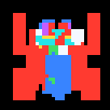
Open evidence panelClose evidence panel
Inferred Galaga butterfly escort model
Consensus model; 7 samples, 90% average confidence.
Consensus model; 7 samples, 90% average confidence.
Galaga butterfly escort target
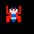
Open evidence panelClose evidence panel
Galaga butterfly escort target
Exact source-frame crop for escort/butterfly visual comparison.
Exact source-frame crop for escort/butterfly visual comparison.
classic, scorpion, stingray, galboss
Main non-boss formation rows across standard stages.
Mid-tier enemy line with higher scoring and more visible board presence than bees.
Uses `type: but` in gameplay state and shares family progression with the stage band.
Boss / Super Boss enemy
Current Aurora boss sprite
Inferred Galaga command boss model
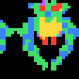
Open evidence panelClose evidence panel
Inferred Galaga command boss model
Consensus model; 1 sample, 100% average confidence.
Consensus model; 1 sample, 100% average confidence.
Galaga command boss target
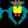
Open evidence panelClose evidence panel
Galaga command boss target
Exact source-frame crop from a live formation boss window.
Exact source-frame crop from a live formation boss window.
classic, stingray, galboss
Top formation row in standard stages, with later themed boss families and archetypes.
Higher-health enemy that can dive solo or with escorts and is central to capture/rescue flow.
Uses `type: boss`, starts with extra health, and picks up named archetypes like `command-core`, `super-boss-scorpion`, `partner-wing-stingray`, `council-boss`, and `super-partner-pair` through stage presentation.
Exact source-frame dive crop used as the challenge-specialty target until a challenge-only sheet is promoted.
Exact source-frame dive crop used as the challenge-specialty target until a challenge-only sheet is promoted.
mosquito
Late challenge stages from stage 19 onward.
Late challenge-family visual used for stronger bonus-stage identity deeper into the Aurora progression.
Like dragonfly, this is a challenge-family presentation layer rather than a new base gameplay type.
Stage Family Progression
How Aurora changes the visible enemy families and named boss archetypes as stage bands advance.
Stage Band
Families In Use
Boss Archetype
Description
quiet-skies from stage 1
bee classic · but classic · boss classic · challenge classic
command-core
Classic opening Aurora band. Closest to original Galaga feel in stars, enemy look, and cadence.
scorpion-dawn from stage 4
bee scorpion · but scorpion · boss classic · challenge classic
super-boss-scorpion
First Aurora-flavored band. Adds scorpion family visuals while keeping the challenge family conservative.
stingray-surge from stage 8
bee stingray · but stingray · boss stingray · challenge dragonfly
partner-wing-stingray
Main later-stage Aurora band where both background and audio identity shift clearly away from the classic opening.
galboss-veil from stage 12
bee galboss · but galboss · boss galboss · challenge dragonfly
council-boss
Heavier late-stage band with the galboss family and stronger aurora presentation.
crown-aurora from stage 16
bee galboss · but galboss · boss galboss · challenge mosquito
super-partner-pair
Late Aurora crown band tying the strongest shell/front-door identity back into the deeper stage family.
Artifact Conformance Status
Target-versus-current conformance across the application artifacts that shape the game: sprite targets, sprite motion, audio cues, backgrounds, shell/icon surfaces, fonts, stage feel, and boss choreography. Rows are generated from the current analysis artifacts so the scorecard stays tied to measured evidence.
Artifact Surface
Current / Target
Measurement
Evidence
Next Gap
Sprites: docs catalog proxy vs inferred Galaga pixel models Measured proxy; keep alongside live runtime canvas score
6.2/10 Target: >=8.5/10 as a fast docs/current-definition proxy
8 catalog keys compared; model confidence 94% from 21 accepted source samples; weakest current proxy challenge-dragonfly 5.5/10.
Add harness windows for flap cycle A/B frames, pulse and damage-state timing, dive-rotation silhouettes, and carried/rescue/dual-fighter transition frames before treating sprite conformance as visually complete.
Continue frame-labeled path references so boss and alien choreography can be judged against exact source trajectories.
Target Artifact Coverage
The online and local Galaga artifacts that best illustrate Aurora's target, with explicit status for what has actually been ingested. This keeps challenge-stage, sprite, audio, rules, and screen-surface work tied to visible evidence instead of loose memory.
Coverage read: 5.1/10 overall target-artifact ingestion; 4.5/10 challenge-stage target readiness; 0 late challenge windows still missing.
Aurora now has media-backed windows for all tracked Galaga challenge stages, including Challenges 4-8. The bottleneck has moved from source acquisition to precision: each window needs five-group frame labels for entry side, path family, scoreable band, exit side, alien family, and perfect-bonus opportunity before direct trajectory scoring should rise.
Arcade Game Series Galaga perfect challenge-stage guides arcade-game-series-late-perfect-guides source 1 source 2 source 3
not-ingested critical priority; confidence medium
0/10 axes: late challenge-stage progression, perfect-bonus learning, special enemy appearance, late challenge-stage target list
Late challenge-stage progression, perfect-bonus examples, and novelty enemy appearances around stages 11, 15, 19, 23, 27, and 31.
Identifies the late challenge stages that matter most for the next media capture pass.
Acquire lawful gameplay windows for the late challenge stages and promote per-group labels. Use the guides only to prioritize stage windows and expected novelty, not as pixel/motion ground truth.
0/0 local anchors
Controlled local arcade/MAME-style capture controlled-emulation-capture source 1
Repeatable clean capture of exact challenge-stage windows with consistent frame rate, native aspect, known input, and reproducible timestamps.
Not currently used. This is the best future route for high-precision stage-by-stage measurement if lawful source setup is available.
Set up an approved capture source, record source manifest, capture challenges 1-8, and extract trajectories/contact sheets with the same harness shape used for existing media.
Concrete visual timing reference for early normal-stage entry, first challenge arrival, early challenge result flow, and early capture pressure.
This is the current strongest media-backed path reference. It has 10 extracted windows and validated path labels, including 4 accepted challenge-entry labels.
It is only a 360p early-window corpus. Add complete challenge-stage windows and later challenge stages beyond Challenge 3 before using it as the sole movement target.
13/13 local anchors
User-supplied Galaga challenge-stage compilation videos user-supplied-galaga-challenge-compilations Local or derived source
partial critical priority; confidence medium
4.2/10 axes: challenge-stage entry, late challenge-stage progression, later challenge stages, trajectory
Concrete challenge-stage choreography reference for all eight visible Galaga challenge stages, including late-stage alien-family novelty, five-group score exhibitions, perfect-result cadence, and non-combat safety.
All eight challenge stages now have first-pass media-backed windows and Aurora implementation contracts. Late challenges 4-8 are no longer empty evidence gaps, but they still need five-group frame labels before direct trajectory scoring can be trusted.
Promote five-group labels for each challenge window: first visible time, entry side, path family, scoreable upper-band interval, exit side, alien family, and perfect-bonus opportunity.
8/8 local anchors
Bandai Namco Galaga Web history/game page bandai-namco-official-galaga-history source 1
Official grounding for the game identity: formation entry, three enemy roles, tractor beam, dual fighter, challenging stages, and depth over repeat play.
Formal official-source notes now ground Galaga identity, formation entry, enemy-role taxonomy, capture/rescue, and challenge-stage depth.
Promote selected assertions into rule-specific checks where they can reduce prose-only documentation debt.
Add late-wave/results windows and map specialty alien novelty explicitly.
Challenging Stage 4 marker 15
partially-ingested
4.5/10
challenge-04-pink-serpentine
Promote five-group labels for the pink serpentine reference and rebuild Aurora Stage 15 around a distinct late-stage specialty arc.
Challenging Stage 5 marker 19
partially-ingested
4.5/10
challenge-05-pink-and-green-cascade
Promote five-group labels for the pink/green cascade reference and align Aurora's mosquito/specialty-family novelty to the visible target.
Challenging Stage 6 marker 23
partially-ingested
4.5/10
challenge-06-green-ladder-split
Promote five-group labels for the green ladder/split reference and add runtime probes for staggered group spacing.
Challenging Stage 7 marker 27
partially-ingested
4.5/10
challenge-07-yellow-diagonal-fan
Promote five-group labels for the yellow diagonal fan reference and use it as the strongest late-stage visual novelty target.
Challenging Stage 8 marker 31
partially-ingested
4.5/10
challenge-08-blue-purple-finale
Promote five-group labels for the blue/purple finale reference and use it as the late-loop capstone contract.
Alien Conformance Index
Current game-visible alien and enemy roles with activity, presence, evidence anchors, confidence, and the next conformance gap. This is the generated-guide view of the maintained game conformance catalog.
Exact source-frame crop from a live Zako/scout dive pose.
Exact source-frame crop from a live Zako/scout dive pose.
Galaga reference context
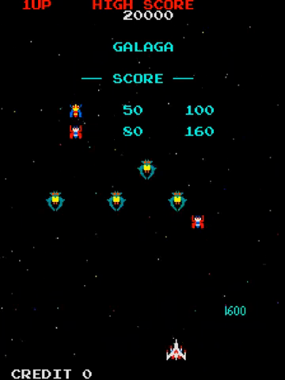
Open evidence panelClose evidence panel
Galaga reference context
Score-table context for role and color family.
Score-table context for role and color family.
Basic formation alien; dives, fires, supplies early pressure, and appears in challenge groups.
All regular stages and challenge stages.
Galaga Zako/scout behavior, challenge-stage evidence, and galaga3-zako audio reference.
7.8/10 behavior/stage-role within current alien-entry scorer medium; visual likeness is still low-confidence proxy
Score Aurora displayed sprites against the inferred Galaga consensus models and source-frame pixel targets, then promote lossless/emulator targets when available.
Reference-media context for capture and rescue flow.
Reference-media context for capture and rescue flow.
Converts player state into risk/reward: destroy too early for loss, rescue for dual fighter.
Capture/rescue stages after boss capture.
Galaga capture/rescue audio and event flow correspondence artifacts.
guardrail pass for flow medium-high for state flow; visual feedback lower
Use the generated dual-fighter target for rescue/carry review, then add visual event scoring for destruction, rescue join, and player comprehension.
Audio Conformance Index
The major event-audio families, what they mean to the player, which Galaga-family references currently ground them, and where measurement still needs to improve.
Cue Family
Gameplay Meaning
Human Review
Reference
Score / Confidence
Next Gap
Start and stage entry gameStart, formationArrival, stageTransition
Marks bonus-stage entry and result/reward feedback.
challenge-transition Aurora waveform
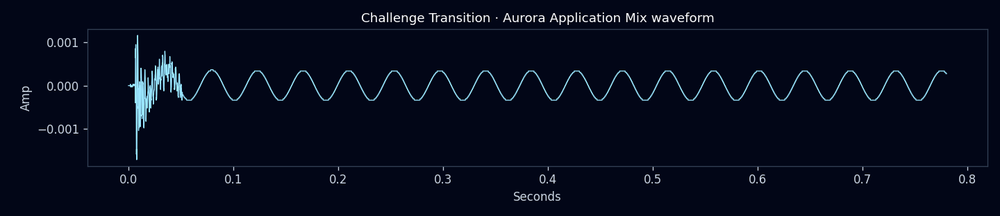
Open evidence panelClose evidence panel
challenge-transition Aurora waveform
Expanded evidence view.
challenge-transition reference spectrogram
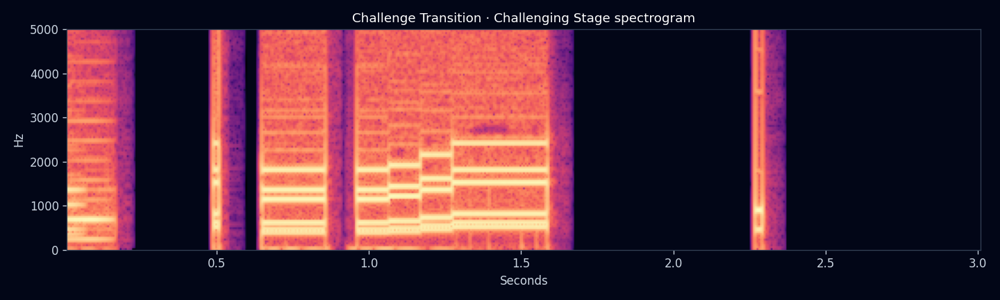
Open evidence panelClose evidence panel
challenge-transition reference spectrogram
Expanded evidence view.
challenge-results Aurora waveform
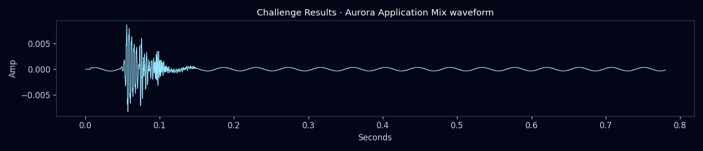
Open evidence panelClose evidence panel
challenge-results Aurora waveform
Expanded evidence view.
challenge-results reference spectrogram
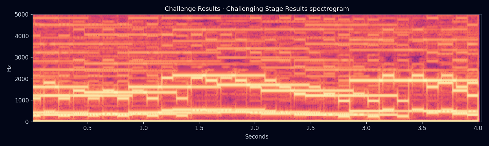
Open evidence panelClose evidence panel
challenge-results reference spectrogram
Expanded evidence view.
galaga challenging-stage, results, and perfect-result clips.
timing guardrail pass medium
Add score/result surface conformance and direct challenge-stage audio fit checks.
Stage Conformance Summary
Stage-by-stage and stage-band summary of difficulty, maneuvers, trajectory identity, gameplay description, current evidence, and the main conformance gap.
Stage / Band
Gameplay Summary
Key Aspects
Evidence
Gap
Stage 1
Baseline rack entry, first dives, low pressure, player onboarding.
Formation arrival timing, first dive timing, safe early pressure, classic visual/audio framing.
stage-1-baseline evidence window; stage-1 geometry and shot trust guardrails.
Improve direct visual reference grounding for alien/player likeness.
Stage 3 / first challenge
First challenging stage and bonus-stage learning moment. Current critical read: the rule baseline is present, but the set piece does not yet read enough like Galaga's first challenge.
Non-lethal challenge behavior, no enemy shooting, no ship loss, visible arrival and peel-off patterns, bee/butterfly bonus-line grammar.
Challenge timing guardrails, challenge-stage candidate window, and reference-artifacts/analyses/challenge-stage-conformance/latest.json.
Make stage 3 best-match challenge-1 arrival/late-wave references instead of a later mixed challenge target.
Stage 4
First major pressure step and capture/squadron importance.
Boss capture, special attacks, lane pressure, player loss windows, fairness.
Stage 4 pressure geometry, lane loss windows, close-shot trust harnesses.
Continue pressure precision while protecting fairness and persona safety.
Stage 7 challenge
Scorpion cross-sweep challenge set piece. Current critical read: the label variation exists, but the measured vector still clusters too close to the same broad challenge-reference family.
No enemy shooting, no ship loss, mixed alien families, cross-sweep path family, higher-density bonus pattern.
challenge-stage-scorpion-cross, alien-entry/challenge-variation, formation-boss path extraction, and challenge-stage conformance artifacts.
Turn stage 7 into a true challenge-2 contract with group-by-group mixed-novelty scoring and visible entry/exit differences.
Stage 11 challenge
Stingray hook-arc challenge set piece. Current critical read: dragonfly family presentation is visible, but active sprite-motion novelty is not yet measured.
No enemy shooting, no ship loss, new challenge-family visual language, hook-arc motion, later-stage bonus pattern novelty.
challenge-stage-stingray-hook, path-family comparison, and challenge-stage conformance artifact.
Add challenge-3 reference phase scoring and active visual-motion scoring for flapping, pulsing, and silhouette changes.
Stage 12 to 14
Late-run cleanup, pressure, squadron reward, and advanced route planning.
Improve direct late-stage path/cadence precision and replay-style pressure analysis.
Stage 15 challenge
Boss-led late-loop challenge set piece. Current critical read: the widest motion shape is present, but it still lacks a mature late-challenge reference target.
No enemy shooting, no ship loss, boss-heavy formation choreography, late-loop motion, advanced bonus-stage path reading.
Create durable stage-19 evidence windows and late Galaga challenge reference labels before treating this as conformant.
Challenge Stage Deep Dive
A deliberately critical stage-by-stage comparison of Aurora challenging stages against Galaga-style bonus-stage behavior. This separates rule conformance from interesting visual conformance: no enemy shooting and no ship loss are necessary, but the higher-value gap is authored alien movement, alien-family variation, and learnable set-piece novelty.
current challenge stages are functionally safe but not yet fully credible Galaga-like bonus exhibitions: strict movement is 3.4/10, strict graphics is 4.3/10, alien/stage novelty is 3.4/10, player shot opportunity is 5.1/10, active sprite-motion now includes object-tracked runtime pixel/silhouette evidence but not yet Galaga target-crop sequence comparison, and late challenge references are still first-pass group labels rather than full object tracks. Diagnostic legacy coverage was 6.9/10, which is why the old read was too generous.
Scoring model: strict-v2-user-baseline. Each challenge starts at 1/10 for interest, movement, and graphics; no-shot/no-kill safety is a required guardrail, not a score booster. Legacy broad coverage is diagnostic only.
Naming rule: normal Levels and Challenging Stages are separate. The challenge rows below use labels like Challenging Stage 1 (Levels 3-4) instead of calling that set piece Level 4.
Evidence-image rule: contact sheets are supporting artifacts for visual inspection, not the main human-readable conformance explanation. Use each row's target/current/conformance text for the judgment; open the evidence panel only when you need to inspect the underlying frames at native scale.
Peek at the living effort summary
A player should experience challenging stages as safe but tense score exhibitions with memorable entry routes, fresh alien types, readable trajectories, and a learnable perfect-bonus opportunity. Aurora currently preserves the safety rule, but the actual spectacle, motion, and visual novelty are still early.
Design work should move from broad path-family labels to explicit per-challenge contracts: group order, first-visible frame, entry side, exit side, path length, turn count, alien family, animation phases, bonus opportunity, and result feedback.
Improvement plan:
Use strict challenge-stage scores as the release-facing truth; keep broad coverage scores only as diagnostics.
Define a challenge-stage target grammar for group order, entry/exit side, path length, turn count, featured alien, scoring window, perfect bonus, animation phases, and result feedback.
Stage 3: rebuild Challenging Stage 1 against the Galaga challenge-1 arrival and late-wave references with visibly longer movement and readable exits.
Stage 7: rebuild Challenging Stage 2 as a separate mixed-novelty crossing set piece with different entry/exit and timing grammar.
Stage 11: rebuild Challenging Stage 3 around boss-led novelty plus active sprite-motion scoring.
Stage 15/19/23/27/31: continue replacing repeated late-stage patterns with first-pass media-backed contracts, then promote each to five-group frame labels.
Publish contact sheets, trajectory SVGs, per-stage critical gaps, and strict axis scores in generated docs.
Contact sheets are supporting visual evidence for scanning motion shape, frame progression, and density. They are not the primary score explanation; use the surrounding target/current/conformance text for the human-readable judgment, and scroll this panel at native scale when the pixels matter.
Best current reference label: challenge-1-late-wave-group-4
First Galaga-style challenging stage: readable bonus set piece, no fire, no ship loss, upper-band mirrored entries, bee/butterfly line waves, visible arrival/peel-off.
late challenge group crosses through upper lanes before peel-off
Aurora Current
Aurora current contact sheet
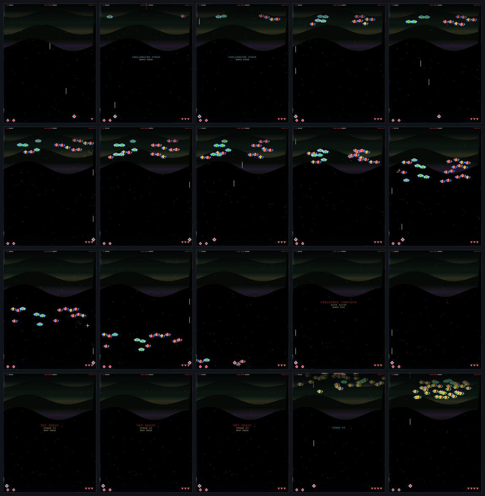
Open evidence panelClose evidence panel
Aurora current contact sheet
Contact sheets are supporting visual evidence for scanning motion shape, frame progression, and density. They are not the primary score explanation; use the surrounding target/current/conformance text for the human-readable judgment, and scroll this panel at native scale when the pixels matter.
Strict movement score 3.3/10 against challenge-1-late-wave-group-4: y-range fit 1, path-length fit 0.68, turn fit 1. Current probes are still sampled summaries, so full temporal choreography is not yet proven. Legacy broad vector best-match was 8.7/10 against challenge-1-late-wave-group-4; xRange 1.4, yRange 0.5081, pathLength 0.4901.
Conformance Read
Readable trajectory diagram
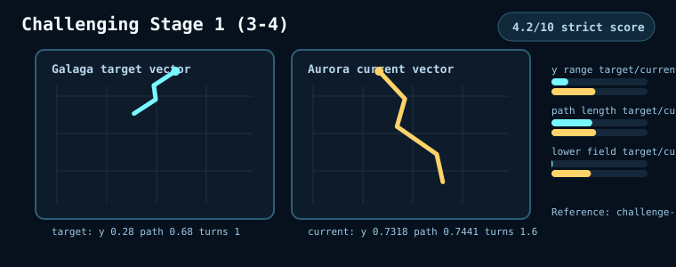
Open evidence panelClose evidence panel
Readable trajectory diagram
Generated from the challenge-stage metric artifact. This is a human-review sketch of target/current motion vectors, not raw optical tracking.
Generated from the challenge-stage metric artifact. This is a human-review sketch of target/current motion vectors, not raw optical tracking.
Strict alien/progression novelty score 3.4/10. Current stages expose labels and type mixes, but this does not yet prove Galaga-like stage-by-stage introduction, fresh featured aliens, or memorable bonus-stage teaching moments. Opening wave exposes 2 type(s) and classic visual family labels. Group identity diagnostic: 5/5 wave type signatures and 1/5 path signatures; average within-wave spawn span 0.48s.
Group identity: 7.2/10. 5/5 wave type signatures and 1/5 path signatures; average within-wave spawn span 0.48s.
Lane types: bee, bee, bee, bee, but, but, but, but
Movement
Strict movement score 3.3/10 against challenge-1-late-wave-group-4: y-range fit 1, path-length fit 0.68, turn fit 1. Current probes are still sampled summaries, so full temporal choreography is not yet proven. Legacy broad vector best-match was 8.7/10 against challenge-1-late-wave-group-4; xRange 1.4, yRange 0.5081, pathLength 0.4901.
Strict movement score 3.3/10 against challenge-1-late-wave-group-4: y-range fit 1, path-length fit 0.68, turn fit 1. Current probes are still sampled summaries, so full temporal choreography is not yet proven.
Samples: 9/9
Active enemies: 40-40
X range: 297.811
Y range: 39.441
Lower-field share: 0.156
Sprite Motion / Shot Route
Object-track / shot-opportunity diagram
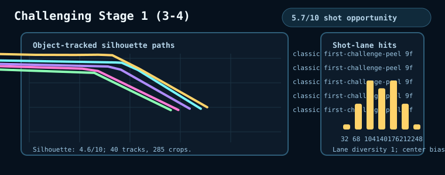
Open evidence panelClose evidence panel
Object-track / shot-opportunity diagram
Generated from runtime challenge sprite silhouettes and sampled player shot lanes. This is a readable probe of visible motion and scoreability, not yet Galaga target-crop optical matching.
Generated from runtime challenge sprite silhouettes and sampled player shot lanes. This is a readable probe of visible motion and scoreability, not yet Galaga target-crop optical matching.
Shot-opportunity probe found scoreable targets in 9 sampled windows; 78% had a lane with 2+ targets, lane diversity was 1, and center-lane bias was 0.21.
Object silhouettes: 4.6/10; player shot opportunity: 5.7/10.
Safety / Rules
Challenging stages are evaluated separately from normal levels: they should preserve the no-shooting, no-ship-loss bonus-stage rule before they earn interest/conformance credit.
Enemy shots: 0
Attack starts: 0
Ship losses: 0
Challenge contacts: 0
Gaps / Next
Movement conformance is only 3.3/10 under the strict scorer: current paths are too short/shallow and do not yet show the sweeping, turning, learnable Galaga challenge-stage trajectories.
Alien/stage novelty is only 3.4/10: the current type mix does not yet prove Galaga-like new alien introductions, memorable challenge-specific roles, or distinct bonus-stage learning patterns.
Protect the first-challenge bee/butterfly line contract, then tune path length, turn count, and rack-slot precision against challenge-1 arrival and late-wave labels.
Add contact-sheet comparison for first-visible frame, entry side, exit side, lane occupancy, and group timing so the next tuning pass can improve trajectory precision without subjective guessing.
Contact sheets are supporting visual evidence for scanning motion shape, frame progression, and density. They are not the primary score explanation; use the surrounding target/current/conformance text for the human-readable judgment, and scroll this panel at native scale when the pixels matter.
Best current reference label: challenge-2-arrival-group-1
Second challenge should feel denser and more novel than challenge 1 while staying nonlethal and non-shooting.
denser second challenge pattern with visible upper-field score window
Aurora Current
Aurora current contact sheet
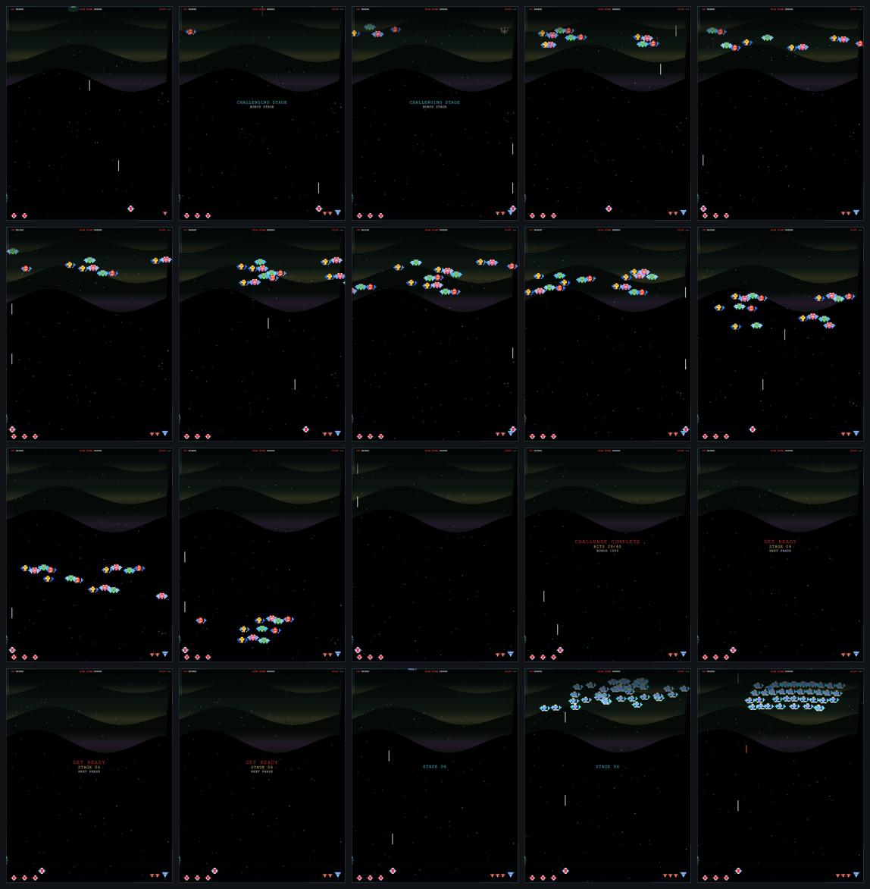
Open evidence panelClose evidence panel
Aurora current contact sheet
Contact sheets are supporting visual evidence for scanning motion shape, frame progression, and density. They are not the primary score explanation; use the surrounding target/current/conformance text for the human-readable judgment, and scroll this panel at native scale when the pixels matter.
Strict movement score 3.4/10 against challenge-2-arrival-group-1: y-range fit 1, path-length fit 1, turn fit 1. Current probes are still sampled summaries, so full temporal choreography is not yet proven. Legacy broad vector best-match was 9.4/10 against challenge-2-arrival-group-1; xRange 1.3571, yRange 0.7703, pathLength 0.9567.
Conformance Read
Readable trajectory diagram
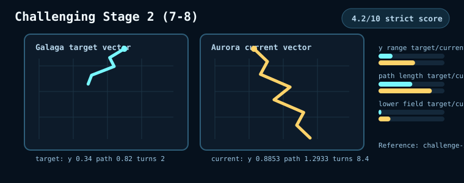
Open evidence panelClose evidence panel
Readable trajectory diagram
Generated from the challenge-stage metric artifact. This is a human-review sketch of target/current motion vectors, not raw optical tracking.
Generated from the challenge-stage metric artifact. This is a human-review sketch of target/current motion vectors, not raw optical tracking.
Strict alien/progression novelty score 3.4/10. Current stages expose labels and type mixes, but this does not yet prove Galaga-like stage-by-stage introduction, fresh featured aliens, or memorable bonus-stage teaching moments. Opening wave exposes 4 type(s) and classic visual family labels. Group identity diagnostic: 5/5 wave type signatures and 3/5 path signatures; average within-wave spawn span 0.42s.
Group identity: 8.3/10. 5/5 wave type signatures and 3/5 path signatures; average within-wave spawn span 0.42s.
Lane types: but, boss, rogue, bee, bee, rogue, boss, but
Movement
Strict movement score 3.4/10 against challenge-2-arrival-group-1: y-range fit 1, path-length fit 1, turn fit 1. Current probes are still sampled summaries, so full temporal choreography is not yet proven. Legacy broad vector best-match was 9.4/10 against challenge-2-arrival-group-1; xRange 1.3571, yRange 0.7703, pathLength 0.9567.
Strict movement score 3.4/10 against challenge-2-arrival-group-1: y-range fit 1, path-length fit 1, turn fit 1. Current probes are still sampled summaries, so full temporal choreography is not yet proven.
Samples: 8/9
Active enemies: 38-40
X range: 351.256
Y range: 57.644
Lower-field share: 0.125
Sprite Motion / Shot Route
Object-track / shot-opportunity diagram
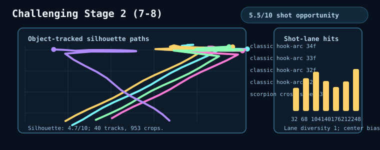
Open evidence panelClose evidence panel
Object-track / shot-opportunity diagram
Generated from runtime challenge sprite silhouettes and sampled player shot lanes. This is a readable probe of visible motion and scoreability, not yet Galaga target-crop optical matching.
Generated from runtime challenge sprite silhouettes and sampled player shot lanes. This is a readable probe of visible motion and scoreability, not yet Galaga target-crop optical matching.
Shot-opportunity probe found scoreable targets in 8 sampled windows; 50% had a lane with 2+ targets, lane diversity was 1, and center-lane bias was 0.09.
Object silhouettes: 4.7/10; player shot opportunity: 4.9/10.
Safety / Rules
Challenging stages are evaluated separately from normal levels: they should preserve the no-shooting, no-ship-loss bonus-stage rule before they earn interest/conformance credit.
Enemy shots: 0
Attack starts: 0
Ship losses: 0
Challenge contacts: 10
Gaps / Next
Movement conformance is only 3.4/10 under the strict scorer: current paths are too short/shallow and do not yet show the sweeping, turning, learnable Galaga challenge-stage trajectories.
Graphical conformance is only 3.9/10: runtime object-track silhouettes are now measured, but they are not yet matched frame-by-frame against Galaga target sprite crops, rotations, dive poses, and pulsing/flapping cadence.
Alien/stage novelty is only 3.4/10: the current type mix does not yet prove Galaga-like new alien introductions, memorable challenge-specific roles, or distinct bonus-stage learning patterns.
Cross-sweep identity now lands on the expected Challenge 2 reference family; next work is trajectory precision and active visual novelty, not basic identity.
Tune challenge 2 toward the denser mixed-novelty-line reference instead of relying on a generic cross-sweep.
Score separate group identities so stage 7 is not just a slightly wider stage 3.
Contact sheets are supporting visual evidence for scanning motion shape, frame progression, and density. They are not the primary score explanation; use the surrounding target/current/conformance text for the human-readable judgment, and scroll this panel at native scale when the pixels matter.
Best current reference label: challenge-3-arrival-group-1
Third challenge should make the new visual family and boss-led novelty obvious, with larger sweep vocabulary and no attacks.
later challenge pattern with larger visual novelty while remaining non-attacking
Aurora Current
Aurora current contact sheet
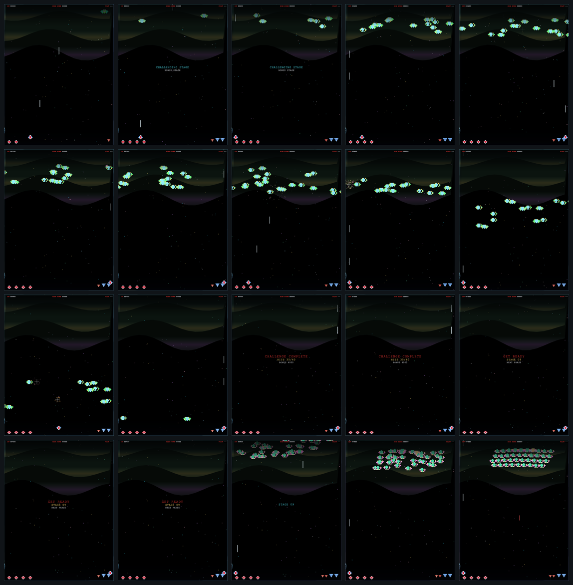
Open evidence panelClose evidence panel
Aurora current contact sheet
Contact sheets are supporting visual evidence for scanning motion shape, frame progression, and density. They are not the primary score explanation; use the surrounding target/current/conformance text for the human-readable judgment, and scroll this panel at native scale when the pixels matter.
Strict movement score 3.5/10 against challenge-3-arrival-group-1: y-range fit 1, path-length fit 1, turn fit 1. Current probes are still sampled summaries, so full temporal choreography is not yet proven. Legacy broad vector best-match was 9.6/10 against challenge-3-arrival-group-1; xRange 1.5143, yRange 0.7166, pathLength 1.0442.
Conformance Read
Readable trajectory diagram
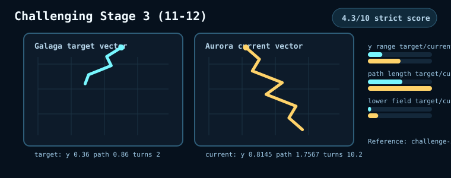
Open evidence panelClose evidence panel
Readable trajectory diagram
Generated from the challenge-stage metric artifact. This is a human-review sketch of target/current motion vectors, not raw optical tracking.
Generated from the challenge-stage metric artifact. This is a human-review sketch of target/current motion vectors, not raw optical tracking.
Strict alien/progression novelty score 3.4/10. Current stages expose labels and type mixes, but this does not yet prove Galaga-like stage-by-stage introduction, fresh featured aliens, or memorable bonus-stage teaching moments. Opening wave exposes 4 type(s) and dragonfly visual family labels. Group identity diagnostic: 5/5 wave type signatures and 3/5 path signatures; average within-wave spawn span 0.36s.
Group identity: 8/10. 5/5 wave type signatures and 3/5 path signatures; average within-wave spawn span 0.36s.
Lane types: boss, rogue, but, bee, boss, bee, but, rogue
Movement
Strict movement score 3.5/10 against challenge-3-arrival-group-1: y-range fit 1, path-length fit 1, turn fit 1. Current probes are still sampled summaries, so full temporal choreography is not yet proven. Legacy broad vector best-match was 9.6/10 against challenge-3-arrival-group-1; xRange 1.5143, yRange 0.7166, pathLength 1.0442.
Strict movement score 3.5/10 against challenge-3-arrival-group-1: y-range fit 1, path-length fit 1, turn fit 1. Current probes are still sampled summaries, so full temporal choreography is not yet proven.
Samples: 8/9
Active enemies: 21-40
X range: 391.024
Y range: 59.557
Lower-field share: 0.129
Sprite Motion / Shot Route
Object-track / shot-opportunity diagram
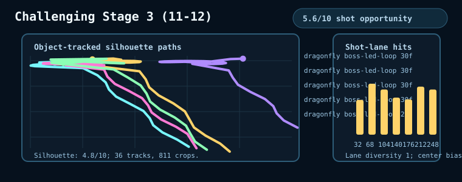
Open evidence panelClose evidence panel
Object-track / shot-opportunity diagram
Generated from runtime challenge sprite silhouettes and sampled player shot lanes. This is a readable probe of visible motion and scoreability, not yet Galaga target-crop optical matching.
Generated from runtime challenge sprite silhouettes and sampled player shot lanes. This is a readable probe of visible motion and scoreability, not yet Galaga target-crop optical matching.
Shot-opportunity probe found scoreable targets in 8 sampled windows; 50% had a lane with 2+ targets, lane diversity was 1, and center-lane bias was 0.23.
Object silhouettes: 4.8/10; player shot opportunity: 4.7/10.
Safety / Rules
Challenging stages are evaluated separately from normal levels: they should preserve the no-shooting, no-ship-loss bonus-stage rule before they earn interest/conformance credit.
Enemy shots: 0
Attack starts: 0
Ship losses: 0
Challenge contacts: 2
Gaps / Next
Movement conformance is only 3.5/10 under the strict scorer: current paths are too short/shallow and do not yet show the sweeping, turning, learnable Galaga challenge-stage trajectories.
Alien/stage novelty is only 3.4/10: the current type mix does not yet prove Galaga-like new alien introductions, memorable challenge-specific roles, or distinct bonus-stage learning patterns.
Dragonfly/boss-led identity now lands on the expected Challenge 3 reference family, but sprite-motion novelty and tracked Galaga challenge-3 path phases are not yet scored.
Promote challenge-3 boss-led reference phases and score dragonfly visual novelty as animation, not only family label.
Add motion windows for wing flaps, pulsing, dive/rotation silhouette, and challenge-only nonlethal arrival.
Contact sheets are supporting visual evidence for scanning motion shape, frame progression, and density. They are not the primary score explanation; use the surrounding target/current/conformance text for the human-readable judgment, and scroll this panel at native scale when the pixels matter.
Best current reference label: challenge-4-pink-serpentine-group-5
Fourth challenge should shift into long specialty serpentine arcs with obvious new color/family identity while staying nonlethal.
final pink serpentine pass before the result surface
Aurora Current
Aurora runtime contact sheet pending for this challenge stage.
Strict movement score 3.7/10 against challenge-4-pink-serpentine-group-5: y-range fit 1, path-length fit 1, turn fit 1. Current probes are still sampled summaries, so full temporal choreography is not yet proven. Legacy broad vector best-match was 10/10 against challenge-4-pink-serpentine-group-5; xRange 1.5286, yRange 0.7946, pathLength 1.0557.
Conformance Read
Readable trajectory diagram
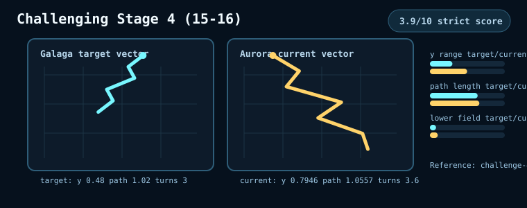
Open evidence panelClose evidence panel
Readable trajectory diagram
Generated from the challenge-stage metric artifact. This is a human-review sketch of target/current motion vectors, not raw optical tracking.
Generated from the challenge-stage metric artifact. This is a human-review sketch of target/current motion vectors, not raw optical tracking.
Strict alien/progression novelty score 3.4/10. Current stages expose labels and type mixes, but this does not yet prove Galaga-like stage-by-stage introduction, fresh featured aliens, or memorable bonus-stage teaching moments. Opening wave exposes 4 type(s) and galboss visual family labels. Group identity diagnostic: 5/5 wave type signatures and 3/5 path signatures; average within-wave spawn span 0.3s.
Group identity: 7.7/10. 5/5 wave type signatures and 3/5 path signatures; average within-wave spawn span 0.3s.
Lane types: boss, rogue, but, bee, bee, but, rogue, boss
Movement
Strict movement score 3.7/10 against challenge-4-pink-serpentine-group-5: y-range fit 1, path-length fit 1, turn fit 1. Current probes are still sampled summaries, so full temporal choreography is not yet proven. Legacy broad vector best-match was 10/10 against challenge-4-pink-serpentine-group-5; xRange 1.5286, yRange 0.7946, pathLength 1.0557.
Strict movement score 3.7/10 against challenge-4-pink-serpentine-group-5: y-range fit 1, path-length fit 1, turn fit 1. Current probes are still sampled summaries, so full temporal choreography is not yet proven.
Samples: 8/9
Active enemies: 9-40
X range: 398.313
Y range: 64.42
Lower-field share: 0.178
Sprite Motion / Shot Route
Object-track / shot-opportunity diagram
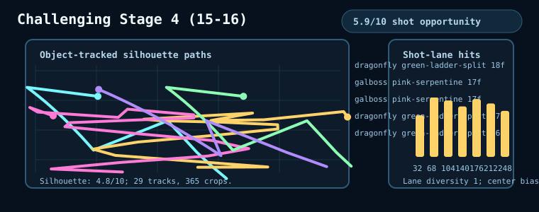
Open evidence panelClose evidence panel
Object-track / shot-opportunity diagram
Generated from runtime challenge sprite silhouettes and sampled player shot lanes. This is a readable probe of visible motion and scoreability, not yet Galaga target-crop optical matching.
Generated from runtime challenge sprite silhouettes and sampled player shot lanes. This is a readable probe of visible motion and scoreability, not yet Galaga target-crop optical matching.
Shot-opportunity probe found scoreable targets in 7 sampled windows; 71% had a lane with 2+ targets, lane diversity was 1, and center-lane bias was 0.16.
Object silhouettes: 4.9/10; player shot opportunity: 5.1/10.
Safety / Rules
Challenging stages are evaluated separately from normal levels: they should preserve the no-shooting, no-ship-loss bonus-stage rule before they earn interest/conformance credit.
Enemy shots: 0
Attack starts: 0
Ship losses: 0
Challenge contacts: 1
Gaps / Next
Movement conformance is only 3.7/10 under the strict scorer: current paths are too short/shallow and do not yet show the sweeping, turning, learnable Galaga challenge-stage trajectories.
Alien/stage novelty is only 3.4/10: the current type mix does not yet prove Galaga-like new alien introductions, memorable challenge-specific roles, or distinct bonus-stage learning patterns.
Pink-serpentine identity now lands on its first-pass late reference, but it still needs five-group frame labels, target sprite-motion evidence, and stronger player-visible novelty before it can claim maturity.
Promote the Challenge 4 pink-serpentine window into five group labels and tune the runtime path so all groups keep a readable serpentine score lane.
Add high-bonus readability probes so late-stage complexity stays learnable instead of becoming visual noise.
Contact sheets are supporting visual evidence for scanning motion shape, frame progression, and density. They are not the primary score explanation; use the surrounding target/current/conformance text for the human-readable judgment, and scroll this panel at native scale when the pixels matter.
Best current reference label: challenge-5-pink-green-cascade-group-1
Fifth challenge should distinguish itself with pink/green cascade motion, alternating group identity, and stronger lower-field pass readability.
alternating specialty groups with lower-field pass awareness while remaining nonlethal
Aurora Current
Aurora runtime contact sheet pending for this challenge stage.
Strict movement score 3.7/10 against challenge-5-pink-green-cascade-group-1: y-range fit 1, path-length fit 0.85, turn fit 1. Current probes are still sampled summaries, so full temporal choreography is not yet proven. Legacy broad vector best-match was 10/10 against challenge-5-pink-green-cascade-group-1; xRange 1.5429, yRange 0.5295, pathLength 0.8627.
Conformance Read
Readable trajectory diagram
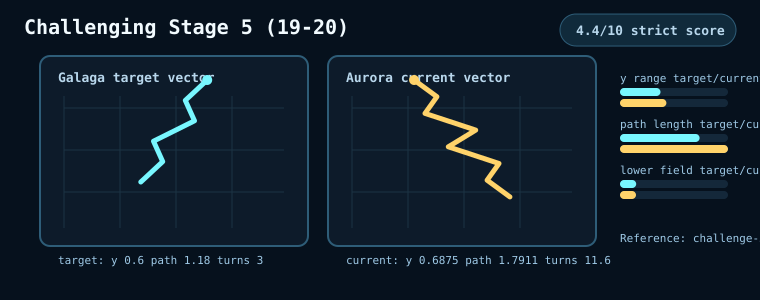
Open evidence panelClose evidence panel
Readable trajectory diagram
Generated from the challenge-stage metric artifact. This is a human-review sketch of target/current motion vectors, not raw optical tracking.
Generated from the challenge-stage metric artifact. This is a human-review sketch of target/current motion vectors, not raw optical tracking.
Strict alien/progression novelty score 3.4/10. Current stages expose labels and type mixes, but this does not yet prove Galaga-like stage-by-stage introduction, fresh featured aliens, or memorable bonus-stage teaching moments. Opening wave exposes 4 type(s) and galboss visual family labels. Group identity diagnostic: 5/5 wave type signatures and 3/5 path signatures; average within-wave spawn span 0.25s.
Group identity: 7.5/10. 5/5 wave type signatures and 3/5 path signatures; average within-wave spawn span 0.25s.
Lane types: rogue, boss, but, bee, boss, but, bee, rogue
Movement
Strict movement score 3.7/10 against challenge-5-pink-green-cascade-group-1: y-range fit 1, path-length fit 0.85, turn fit 1. Current probes are still sampled summaries, so full temporal choreography is not yet proven. Legacy broad vector best-match was 10/10 against challenge-5-pink-green-cascade-group-1; xRange 1.5429, yRange 0.5295, pathLength 0.8627.
Strict movement score 3.7/10 against challenge-5-pink-green-cascade-group-1: y-range fit 1, path-length fit 0.85, turn fit 1. Current probes are still sampled summaries, so full temporal choreography is not yet proven.
Samples: 8/9
Active enemies: 1-40
X range: 353.905
Y range: 69.292
Lower-field share: 0.217
Sprite Motion / Shot Route
Object-track / shot-opportunity diagram
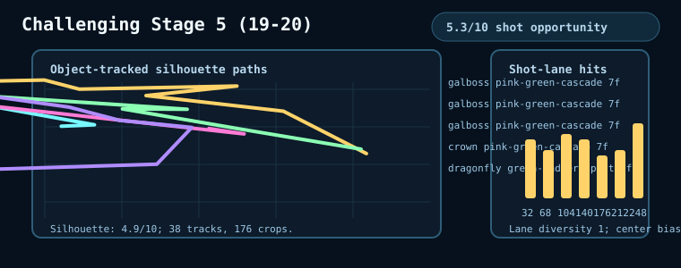
Open evidence panelClose evidence panel
Object-track / shot-opportunity diagram
Generated from runtime challenge sprite silhouettes and sampled player shot lanes. This is a readable probe of visible motion and scoreability, not yet Galaga target-crop optical matching.
Generated from runtime challenge sprite silhouettes and sampled player shot lanes. This is a readable probe of visible motion and scoreability, not yet Galaga target-crop optical matching.
Shot-opportunity probe found scoreable targets in 7 sampled windows; 71% had a lane with 2+ targets, lane diversity was 1, and center-lane bias was 0.15.
Object silhouettes: 4.9/10; player shot opportunity: 5.3/10.
Safety / Rules
Challenging stages are evaluated separately from normal levels: they should preserve the no-shooting, no-ship-loss bonus-stage rule before they earn interest/conformance credit.
Enemy shots: 0
Attack starts: 0
Ship losses: 0
Challenge contacts: 1
Gaps / Next
Movement conformance is only 3.7/10 under the strict scorer: current paths are too short/shallow and do not yet show the sweeping, turning, learnable Galaga challenge-stage trajectories.
Alien/stage novelty is only 3.4/10: the current type mix does not yet prove Galaga-like new alien introductions, memorable challenge-specific roles, or distinct bonus-stage learning patterns.
Pink/green cascade identity now lands on its first-pass late reference, but the current window still needs five group labels and stronger lower-field route readability.
Promote the Challenge 5 pink/green cascade window into five group labels and tune lower-field pass timing against those labels.
Score group-to-group alternation so cascade identity is not just a different path-family name.
Contact sheets are supporting visual evidence for scanning motion shape, frame progression, and density. They are not the primary score explanation; use the surrounding target/current/conformance text for the human-readable judgment, and scroll this panel at native scale when the pixels matter.
Best current reference label: challenge-6-green-ladder-split-group-1
Sixth challenge should emphasize green ladder rhythm and split exits.
staggered ladder groups that reward reading route separation before the split exit
Aurora Current
Aurora runtime contact sheet pending for this challenge stage.
Strict movement score 3.2/10 against challenge-6-green-ladder-split-group-1: y-range fit 0.91, path-length fit 0.79, turn fit 1. Current probes are still sampled summaries, so full temporal choreography is not yet proven. Legacy broad vector best-match was 8.9/10 against challenge-6-green-ladder-split-group-1; xRange 1.5714, yRange 0.5665, pathLength 0.7749.
Strict alien/progression novelty score 3.4/10. Current stages expose labels and type mixes, but this does not yet prove Galaga-like stage-by-stage introduction, fresh featured aliens, or memorable bonus-stage teaching moments. Opening wave exposes 4 type(s) and dragonfly visual family labels. Group identity diagnostic: 5/5 wave type signatures and 1/5 path signatures; average within-wave spawn span 0.24s.
Group identity: 6/10. 5/5 wave type signatures and 1/5 path signatures; average within-wave spawn span 0.24s.
Lane types: bee, but, rogue, boss, boss, rogue, but, bee
Movement
Strict movement score 3.2/10 against challenge-6-green-ladder-split-group-1: y-range fit 0.91, path-length fit 0.79, turn fit 1. Current probes are still sampled summaries, so full temporal choreography is not yet proven. Legacy broad vector best-match was 8.9/10 against challenge-6-green-ladder-split-group-1; xRange 1.5714, yRange 0.5665, pathLength 0.7749.
Strict movement score 3.2/10 against challenge-6-green-ladder-split-group-1: y-range fit 0.91, path-length fit 0.79, turn fit 1. Current probes are still sampled summaries, so full temporal choreography is not yet proven.
Generated from runtime challenge sprite silhouettes and sampled player shot lanes. This is a readable probe of visible motion and scoreability, not yet Galaga target-crop optical matching.
Generated from runtime challenge sprite silhouettes and sampled player shot lanes. This is a readable probe of visible motion and scoreability, not yet Galaga target-crop optical matching.
Shot-opportunity probe found scoreable targets in 7 sampled windows; 71% had a lane with 2+ targets, lane diversity was 1, and center-lane bias was 0.15.
Object silhouettes: 4.9/10; player shot opportunity: 5.4/10.
Safety / Rules
Challenging stages are evaluated separately from normal levels: they should preserve the no-shooting, no-ship-loss bonus-stage rule before they earn interest/conformance credit.
Enemy shots: 0
Attack starts: 0
Ship losses: 0
Challenge contacts: 4
Gaps / Next
Movement conformance is only 3.2/10 under the strict scorer: current paths are too short/shallow and do not yet show the sweeping, turning, learnable Galaga challenge-stage trajectories.
Alien/stage novelty is only 3.4/10: the current type mix does not yet prove Galaga-like new alien introductions, memorable challenge-specific roles, or distinct bonus-stage learning patterns.
Green-ladder split now lands on a Challenge 6 ladder/split reference; remaining work is fuller path length, lower reversal noise, and object-tracked group timing.
Rebuild Challenge 6 around green ladder and split-exit timing until its measured vector hits challenge-6-green-ladder-split-group-1.
Add frame labels for staggered ladder rungs, split exit side, and upper-band scoreability.
Contact sheets are supporting visual evidence for scanning motion shape, frame progression, and density. They are not the primary score explanation; use the surrounding target/current/conformance text for the human-readable judgment, and scroll this panel at native scale when the pixels matter.
Best current reference label: challenge-7-yellow-diagonal-fan-group-1
Seventh challenge should introduce a yellow diagonal fan with a memorable scoring lane.
diagonal fan lane that creates a memorable late-stage aim/read pattern
Aurora Current
Aurora runtime contact sheet pending for this challenge stage.
Strict movement score 3.4/10 against challenge-7-yellow-diagonal-fan-group-1: y-range fit 1, path-length fit 0.72, turn fit 1. Current probes are still sampled summaries, so full temporal choreography is not yet proven. Legacy broad vector best-match was 9.5/10 against challenge-7-yellow-diagonal-fan-group-1; xRange 1.6, yRange 0.5655, pathLength 0.7953.
Strict alien/progression novelty score 3.4/10. Current stages expose labels and type mixes, but this does not yet prove Galaga-like stage-by-stage introduction, fresh featured aliens, or memorable bonus-stage teaching moments. Opening wave exposes 4 type(s) and crown visual family labels. Group identity diagnostic: 5/5 wave type signatures and 1/5 path signatures; average within-wave spawn span 0.23s.
Group identity: 6/10. 5/5 wave type signatures and 1/5 path signatures; average within-wave spawn span 0.23s.
Lane types: boss, bee, but, rogue, rogue, but, bee, boss
Movement
Strict movement score 3.4/10 against challenge-7-yellow-diagonal-fan-group-1: y-range fit 1, path-length fit 0.72, turn fit 1. Current probes are still sampled summaries, so full temporal choreography is not yet proven. Legacy broad vector best-match was 9.5/10 against challenge-7-yellow-diagonal-fan-group-1; xRange 1.6, yRange 0.5655, pathLength 0.7953.
Strict movement score 3.4/10 against challenge-7-yellow-diagonal-fan-group-1: y-range fit 1, path-length fit 0.72, turn fit 1. Current probes are still sampled summaries, so full temporal choreography is not yet proven.
Generated from runtime challenge sprite silhouettes and sampled player shot lanes. This is a readable probe of visible motion and scoreability, not yet Galaga target-crop optical matching.
Generated from runtime challenge sprite silhouettes and sampled player shot lanes. This is a readable probe of visible motion and scoreability, not yet Galaga target-crop optical matching.
Shot-opportunity probe found scoreable targets in 6 sampled windows; 50% had a lane with 2+ targets, lane diversity was 1, and center-lane bias was 0.13.
Object silhouettes: 4.8/10; player shot opportunity: 4.6/10.
Safety / Rules
Challenging stages are evaluated separately from normal levels: they should preserve the no-shooting, no-ship-loss bonus-stage rule before they earn interest/conformance credit.
Enemy shots: 0
Attack starts: 0
Ship losses: 0
Challenge contacts: 0
Gaps / Next
Movement conformance is only 3.4/10 under the strict scorer: current paths are too short/shallow and do not yet show the sweeping, turning, learnable Galaga challenge-stage trajectories.
Alien/stage novelty is only 3.4/10: the current type mix does not yet prove Galaga-like new alien introductions, memorable challenge-specific roles, or distinct bonus-stage learning patterns.
Yellow diagonal fan now lands on a Challenge 7 diagonal-fan reference; remaining work is stronger lower-field travel and object-tracked diagonal lane timing.
Rebuild Challenge 7 around the yellow diagonal fan so the best match lands on challenge-7-yellow-diagonal-fan-group-1, not the finale label.
Add a player-hit opportunity probe that rewards firing along the diagonal band rather than center-lane waiting.
Contact sheets are supporting visual evidence for scanning motion shape, frame progression, and density. They are not the primary score explanation; use the surrounding target/current/conformance text for the human-readable judgment, and scroll this panel at native scale when the pixels matter.
Best current reference label: challenge-8-blue-purple-finale-group-1
Eighth visible challenge should act as a compact blue/purple late-loop capstone.
compact late-loop capstone with clustered arcs and no return to early-stage vocabulary
Aurora Current
Aurora runtime contact sheet pending for this challenge stage.
Strict movement score 3.4/10 against challenge-8-blue-purple-finale-group-1: y-range fit 1, path-length fit 0.61, turn fit 0.93. Current probes are still sampled summaries, so full temporal choreography is not yet proven. Legacy broad vector best-match was 9.4/10 against challenge-8-blue-purple-finale-group-1; xRange 1.6143, yRange 0.5118, pathLength 0.6434.
Strict alien/progression novelty score 3.4/10. Current stages expose labels and type mixes, but this does not yet prove Galaga-like stage-by-stage introduction, fresh featured aliens, or memorable bonus-stage teaching moments. Opening wave exposes 4 type(s) and stingray visual family labels. Group identity diagnostic: 5/5 wave type signatures and 3/5 path signatures; average within-wave spawn span 0.21s.
Group identity: 7.2/10. 5/5 wave type signatures and 3/5 path signatures; average within-wave spawn span 0.21s.
Lane types: rogue, boss, bee, but, but, bee, boss, rogue
Movement
Strict movement score 3.4/10 against challenge-8-blue-purple-finale-group-1: y-range fit 1, path-length fit 0.61, turn fit 0.93. Current probes are still sampled summaries, so full temporal choreography is not yet proven. Legacy broad vector best-match was 9.4/10 against challenge-8-blue-purple-finale-group-1; xRange 1.6143, yRange 0.5118, pathLength 0.6434.
Strict movement score 3.4/10 against challenge-8-blue-purple-finale-group-1: y-range fit 1, path-length fit 0.61, turn fit 0.93. Current probes are still sampled summaries, so full temporal choreography is not yet proven.
Generated from runtime challenge sprite silhouettes and sampled player shot lanes. This is a readable probe of visible motion and scoreability, not yet Galaga target-crop optical matching.
Generated from runtime challenge sprite silhouettes and sampled player shot lanes. This is a readable probe of visible motion and scoreability, not yet Galaga target-crop optical matching.
Shot-opportunity probe found scoreable targets in 7 sampled windows; 71% had a lane with 2+ targets, lane diversity was 1, and center-lane bias was 0.22.
Object silhouettes: 4.9/10; player shot opportunity: 5.3/10.
Safety / Rules
Challenging stages are evaluated separately from normal levels: they should preserve the no-shooting, no-ship-loss bonus-stage rule before they earn interest/conformance credit.
Enemy shots: 0
Attack starts: 0
Ship losses: 0
Challenge contacts: 2
Gaps / Next
Movement conformance is only 3.4/10 under the strict scorer: current paths are too short/shallow and do not yet show the sweeping, turning, learnable Galaga challenge-stage trajectories.
Alien/stage novelty is only 3.4/10: the current type mix does not yet prove Galaga-like new alien introductions, memorable challenge-specific roles, or distinct bonus-stage learning patterns.
Blue/purple finale is now represented as its own runtime contract, but it still needs fuller path length and active sprite-motion evidence before it feels like a late-loop capstone.
Refine the Challenge 8 blue/purple finale with fuller path length and compact late-loop timing.
Promote challenge enemy active-motion scoring so visual novelty is measured through animation, not only family labels.
Testing Personas
The platform-level persona vocabulary as applied to Aurora. Platinum owns the generic persona IDs, aliases, seeded execution, and comparison substrate; Aurora owns which scenarios matter and what each persona should prove for this game.
Persona
Testing Role
Expected Behavior
Game-Specific Checks
Beginner novice
Low-skill onboarding and unfairness detector.
Moves less efficiently, misses more challenge opportunities, but should still experience readable cause and effect.
Stage 1, Stage 2 safety, first challenge clarity.
Intermediate advanced
Competent casual-play proxy.
Clears early waves more often and engages capture/rescue and challenge bonuses inconsistently.
Mid-run pressure, challenge hit rate, Stage 4 fairness.
Expert expert
Skilled player proxy.
Reaches deeper stage bands, positions better, and reveals whether reward routes are viable.
Stage 12/14 reward routes, boss/squadron scoring.
Professional professional
High-skill regression guard and release-confidence proxy.
Exploits strong routes without collapsing from unfair timing or broken scoring.
Professional stage-2 checks, long-run progression ordering, late reward windows.
Persona Performance Distribution
Repeated seeded full-run gameplay for the generic Platinum personas. This measures score, stage depth, time alive, losses, and challenge performance as a distribution rather than treating one seeded route as the whole truth.
Persona
Runs
Score
Stage Reached
Time Alive
Score / Min
Ship Losses
Challenge Hit Rate
Beginner novice 51001-51030
30 Seeded full-run games
14201 median 16005 range 4910-22640
3.7 median 4 range 2-5
1.39 min median 1.46 min range 0.67-2.02 min
9840 median 10256 range 5842-13017
2.93 median 3 range 2-4
56.4% median 80.0%
Intermediate advanced 51101-51130
30 Seeded full-run games
20868 median 21205 range 5510-46370
4.33 median 5 range 2-8
1.6 min median 1.74 min range 0.72-2.83 min
12011 median 11773 range 6514-18896
3.27 median 3 range 2-4
61.3% median 86.3%
Expert expert 51201-51230
30 Seeded full-run games
41090 median 40885 range 23680-88940
6.87 median 6 range 5-13
2.51 min median 2.3 min range 1.68-4 min
16351 median 16663 range 11224-22249
3.27 median 3.5 range 1-4
97.2% median 98.5%
Professional professional 51301-51330
30 Seeded full-run games
42944 median 40915 range 29000-63580
6.33 median 6 range 4-10
2.26 min median 2.12 min range 1.44-3.19 min
19227 median 19176 range 15884-24716
3.73 median 4 range 3-4
98.0% median 100.0%
Source artifact:reference-artifacts/analyses/persona-performance-distribution/latest.json. Raw run directories stay in harness-artifacts/; the published docs use the promoted summary and chart.
Measurement limits: Seeded persona runs are not human playtest proof. They are repeatable skill-profile probes that help us find unfairness, progression order breaks, and whether higher-skill play actually unlocks more of the game.
P1: Persona stage progression is out of order Professional averaged stage 6.33, below Expert at 6.87.
Developer Presentation Controls
The current developer-facing audio and graphics controls that let us tune and compare Aurora presentation while keeping the application-owned theme model explicit.
Developer override for phase-resolved audio routing. `aurora-application` uses Aurora's current synthetic application mix. `galaga-original-reference` uses the synthetic classic-leaning approximation. `galaga-reference-assets` plays the extracted Galaga reference clips for the mapped gameplay/challenge/results moments.